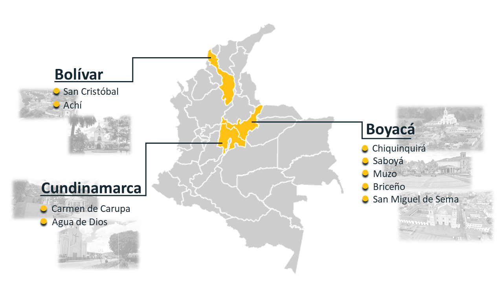

Lugares de influencia
Casos de exito
CORPORACIÓN DE DESARROLLO DE CHIQUINQUIRÁ - CORDECH
Desarrollo de procesos de formalización y apoyo integral a los recuperadores de la ciudad de Chiquinquirá.
ALCALDÍA MUNICIPAL DE CHIQUINQUIRÁ
Actualización del plan de gestión integral de residuos sólidos – PGRIS para el municipio de Chiquinquirá Boyacá.
ALCALDÍA MUNICIPAL DE SABOYÁ
Actualización y formulación del plan integral de residuos sólidos PGIRS para el municipio de Saboyá, Boyacá.
CORPORACIÓN BOYAPAZ
Estrategia de trabajo con la comunidad orientada al planteamiento de un modelo productivo de emprendimiento alrededor de los residuos sólidos aprovechables en apoyo a la gestión social de la Fundación Muzo en el área rural de los municipios Quipama y Muzo.
GOBERNACIÓN DE BOYACÁ
Desarrollar actividades de la dirección de medio ambiente agua potable y saneamiento básico de la Gobernación de Boyacá y para el apoyo a la implementación del proyecto “Desarrollo de acciones de protección, conservación y restauración del medio ambiente para el departamento de Boyacá”.
ALCALDÍA MUNICIPAL DE CHIQUINQUIRÁ
Seguimiento e implementación de las actividades contempladas en el plan de gestión integral de residuos sólidos (PGIRS) para el año 2020, en el municipio de Chiquinquirá del departamento de Boyacá
ALCALDÍA MUNICIPAL DE BRICEÑO
Actualización del plan de gestión integral de residuos sólidos (PGIRS) de acuerdo a la resolución 754 de 2014 para el municipio de Briceño, Boyacá.
ALCALDÍA MUNICIPAL DE CARMEN DE CARUPA
Actualización del plan de gestión integral de residuos sólidos (PGIRS) de acuerdo a la resolución 754 de 2014 para el municipio de Carmen de Carupa, Cundinamarca.
En Desarrollo
ALCALDÍA MUNICIPAL DE SAN MIGUEL DE SEMA
Actualización del plan de gestión integral de residuos sólidos (PGIRS) de acuerdo a la resolución 754 de 2014 para el municipio de San Miguel de Sema, Boyacá.
ALCALDÍA MUNICIPAL DE SAN CRISTÓBAL
Actualización del plan de gestión integral de residuos sólidos (PGIRS) de acuerdo con la resolución 754 de 2014.
Nuestros Servicios
Consultoría para la actualización y formulación de planes integrales de residuos sólidos PGIRS.
Actualización y/o formulación de Planes de Gestión Integral de Residuos Sólidos (PGIRS) según la Resolución 754 de 2014, en la que se adopta “la metodología para la formulación, implementación, evaluación, seguimiento y control”. Acompañamiento en las respuestas y rendición de cuentas ante los entes de control respectivos, así como la asesoría en la emisión de actos administrativos relacionados con la gestión integral de residuos en entes públicos.
Consultoría para el desarrollo e implementación de proyectos y actividades de acuerdo a los planes de gestión integral de residuos sólidos PGIRS.
Ejecución y desarrollo de la implementación de Planes de Gestión Integral de Residuos Sólidos (PGIRS), en alineación con las metas establecidas en el propio plan y con las metas de aprovechamiento nacionales, según lo establecido por los Objetivos de Desarrollo Sostenible y agenda 2030
Apoyo a los procesos de formalización integral de recuperadores de oficio.
Formalización de recuperador oficio según lo establecido en el Decreto 596 de 2016, permitiendo cumplir así con los lineamientos establecidos por la Superintendencia para acceder a tarifas de aprovechamiento, acelerar procesos de organización, re dignificación social y estructuración de sistemas de registro y control de material que puedan impulsar el crecimiento empresarial de esta comunidad.
Implementación y auditoria de sistemas de gestión basura cero.
El SGBC es una herramienta de gestión basada en modelos de economía circular y ecología industrial que permite a empresas u organizaciones publicas y privadas, implementar estrategias de reducción, reutilización, aprovechamiento y valorización de residuos sólidos.
La certificación sistemas de basura cero otorgada por INCONTEC, comprende un análisis y evaluación de ciclo de vida y reducción de riesgos a través de estándares dirigidos al fortalecimiento de la gestión integral de los residuos solidos.
Formulación y ejecución de planes de responsabilidad extendida al productor resolución 1407 del 2018.
Asesoría y acompañamos en el cumplimiento de las resoluciones 1342 de 2020 y 1407 de 2018 en lo referente a la formulación e implementación del plan de gestión ambiental de residuos de envases y empaques que deben presentar todos los productores e importadores que generan residuos de EyE primarios, secundarios o de único uso, entendidos como todo recipiente, embalaje o envoltura de papel, cartón , plásticos, vidrio y metal.
Apoyo en la conformación de comités del incentivo al aprovechamiento Decreto 2412 del 2018.
Organización del comité del incentivo al aprovechamiento para las entidades públicas, en la búsqueda de la formulación y evaluación de proyectos productivos que ayuden a disminuir la cantidad de residuos que llegan a los rellenos sanitarios y aumentar las tasas de aprovechamiento de estas entidades.
CONSULTORIA
- - Sistema de gestión ambiental.
- - Consultoría para la actualización y formulación de planes integrales de residuos sólidos PGIRS.
- - Consultoría para el desarrollo e implementación de proyectos y actividades de acuerdo a los planes de gestión integral de residuos sólidos PGIRS.
- - Apoyo a los procesos de formalización integral de recuperadores de oficio.
- - Implementación y auditoria de sistemas de gestión basura cero.
- - Formulación y ejecución de planes de responsabilidad extendida al productor resolución 1407 del 2018.
GESTIÓN DE PROYECTOS
- - Estrategias de trabajo con comunidades orientada al planteamiento de modelos productivos de emprendimiento alrededor de los residuos sólidos aprovechables.
- - Formulación y gestión de proyecto alineados con los objetivos de desarrollo sostenibles.
- - Apoyo en la conformación de comités del incentivo al aprovechamiento Decreto 2412 del 2018.
EDUCACIÓN Y PEDAGOGÍA
- - Programa Educando y Reciclando – Plasticolor Sue –estrategias pedagógicas de educación ambiental.
- - Gestión y apoyo en procesos de formación académica relacionados con temáticas y de sostenibilidad.
-

DESARROLLO LOGISTICO E INDUSTRIAL
- - Conformación de asociaciones de Recuperadores de oficio - 2 Asociaciones Decreto 596 de 2016.
- - Apoyo logístico, industrial y comercial para recuperación de materiales potencialmente reciclables.
- - Fabricación de madera ecológica a partir de plástico pos consumo y pos industrial.
- - Formulación y gestión de proyectos relacionados con energías renovables, sostenibilidad y disminución de la huella de CO2.